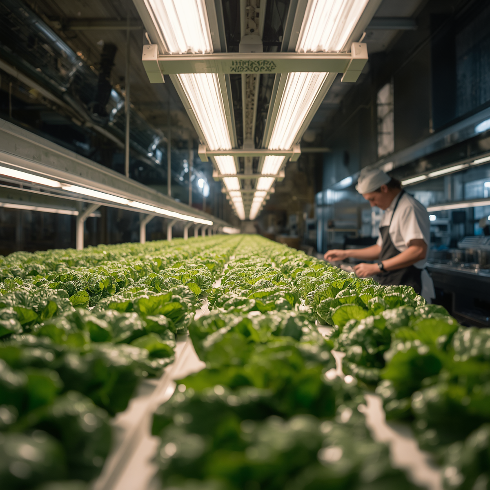

Building the Future of Commercial Hydroponic Farming.
At TarUsha, we help turn commercial farming ambitions into functioning hydroponic growing facilities. From farm planning and infrastructure selection to system installation and production-oriented setup, we work towards building farms designed around each client's objectives, site conditions and growing requirements.

Commercial Hydroponic Farms Need More Than Just Growing Systems
Establishing a commercial hydroponic farm involves much more than installing growing channels or setting up a greenhouse. It requires a considered approach to farm planning, infrastructure, growing systems, environmental conditions, crop selection, production capacity and operational requirements.
At TarUsha, we approach every project with these considerations in mind, helping clients translate their commercial farming objectives into practical, technically viable, and economically sound farm development plans.
Our Commercial Hydroponic Capabilities
Comprehensive engineering, protected cultivation infrastructure, and agronomic systems for commercial farming ventures.
Featured Commercial Hydroponic Projects
Examine the scale, engineering infrastructure, and operational execution of commercial farm facilities developed with TarUsha.
Planning a Commercial Hydroponic Farm?
Whether you are evaluating land feasibility, planning a naturally ventilated polyhouse, or structuring an investment in protected cultivation, our engineering and agronomy team can help turn your vision into an operational facility.
Discuss Your Commercial ProjectFrom Concept to Commercial Cultivation
A practical, milestone-driven framework tailored to the real scope and conditions of your commercial farming project.
Initial Consultation
We work to understand your core commercial ambitions, target crop portfolio, capital budget, target market channels (HoReCa, retail, direct-to-consumer), and production timelines.
Site Assessment and Feasibility
We evaluate your land topography, solar angles, groundwater quality (pH, EC, carbonates and heavy metals), electrical connectivity, road access, and local microclimate patterns.
Farm Planning and System Design
Our engineers formulate the master layout, selecting the appropriate greenhouse type (NVPH vs. climate-controlled), growing systems (NFT, Dutch buckets, or substrate), hydraulic piping, and fertigation staging.
Commercial Proposal
We establish a comprehensive project scope, itemized technical specifications, component-by-component infrastructure bills of materials, and alignment with applicable state/national subsidy cost norms (MIDH/NHB).
Infrastructure Development and Installation
Our project crew executes civil leveling, greenhouse structural erection, UV poly film installation, growing channel assembly, electrical automation, and plumbing integration on-site.
Commissioning and Production Readiness
We conduct hydraulic pressure testing, sensor calibration, nutrient solution balancing, first-cycle nursery sowing, and practical hands-on training for on-site farm management staff.
Building Farms with a Practical Understanding of Hydroponics
Why farm owners, entrepreneurs, and agribusiness investors choose TarUsha as their project partner.
Understanding of Commercial Growing Systems
We do not treat hydroponics as a novelty. Our system recommendations are guided by commercial realities: yield per square metre, ease of cleaning, pump reliability, and harvest labor efficiency.
Integration of Infrastructure & Growing Needs
A greenhouse is only as effective as the growing system inside it. We integrate structure, ventilation, shading, and plumbing into a single coordinated engineering package.
Crop-Oriented Farm Planning
Rather than pushing one proprietary system, we design around what you want to grow: NFT for culinary herbs and crisp lettuce; Dutch buckets for indeterminate peppers and tomatoes.
Practical System Selection
We avoid unnecessary over-engineering and costly imported gimmicks, specifying proven, durable, serviceable components that keep operational maintenance predictable and affordable.
Attention to Technical Implementation
From millimeter-accurate slope grading for NFT gullies to pressure-compensated drip emitters and biological insect screening, our installation teams adhere to strict technical standards.
Solutions Aligned with Individual Objectives
Whether you are developing a 10,000 sq ft pilot facility or a multi-acre commercial expansion, our scope of engagement adapts to your specific investment strategy and site realities.
Frequently Asked Questions
Key technical, infrastructure, and operational questions regarding commercial hydroponic farm projects.
For high-density crops like leafy greens and culinary herbs (NFT systems), commercial viability typically begins at 10,000 sq ft (~1,000 sq. m) to justify on-site staffing, cold storage, and delivery logistics. For vine crops like bell peppers and tomatoes (Dutch bucket substrate systems), commercial operations generally target 0.5 Acre to 1 Acre (~2,000 to 4,000 sq. m) to achieve optimal economies of scale.
Water is the foundation of hydroponics. Before finalizing system design, we mandate a comprehensive laboratory water test measuring pH, Electrical Conductivity (EC), Total Dissolved Solids (TDS), Sodium (Na), Chlorides (Cl), Bicarbonates (HCO3), and Heavy Metals. If borewell water exhibits high salinity or alkalinity, we design an appropriate filtration and blending system (such as Reverse Osmosis or sand/disc filtration) into the initial infrastructure package.
Naturally Ventilated Polyhouses (NVPH) utilize thermal buoyancy with continuous top ridge and side curtains to release heat, representing lower capital and operating costs with zero reliance on heavy electrical cooling power. Climate-Controlled (Pad-and-Fan) Greenhouses employ motorized exhaust fans and cellulose evaporative cooling pads to actively reduce internal air temperatures by 6°C to 10°C during dry hot months, requiring stable 3-phase grid power and ongoing water supply for the pads. We help clients select the structure that best matches local climate data and crop heat thresholds.
Summer management in regions like Delhi NCR, Haryana, and Rajasthan requires a multi-layered engineering strategy:
- High-Ridge Height: Designing structures with 6m+ ridge height to create a substantial hot air buffer above the crop canopy.
- Retractable Thermal Shading: Deploying 50% aluminized heat-reflective screens that block intense infrared radiation while maintaining diffuse light.
- Evaporative Fogging: Installing high-pressure micro-misting systems that cool the air without wetting plant foliage.
- Root Zone Temperature Control: Keeping nutrient reservoirs underground or insulated, and scheduling frequent short irrigation cycles during peak afternoon hours.
Yes. Protected cultivation infrastructure (polyhouses, shade net structures, and micro-irrigation systems) is eligible for financial assistance under the Mission for Integrated Development of Horticulture (MIDH) and the National Horticulture Board (NHB). Subsidy norms typically cover 50% of the recognized benchmark cost norm (or higher in special category states). You can use our on-site Subsidy Calculator to view eligible cost caps under official guidelines.
Commercial viability is determined by proximity to metropolitan consumption hubs and year-round market demand. High-performing commercial categories include:
- Exotic Salad Greens (NFT): Romaine, Butterhead, Iceberg, Lollo Rosso, Rocket (Arugula), and Kale.
- Culinary Herbs (NFT): Genovese Basil, Spearmint, Thyme, Oregano, and Parsley.
- High-Value Vine Crops (Dutch Buckets): Red & Yellow Bell Peppers (Capsicum), Heirloom Cherry Tomatoes, and European Seedless Cucumbers.
- Microgreens: High-margin culinary garnishes with rapid 7–14 day turnaround cycles.
For a typical 10,000 sq ft to 1 Acre polyhouse facility, the end-to-end execution typically spans 8 to 12 weeks: 2 weeks for site feasibility and CAD layout; 4 to 6 weeks for civil foundation, structural erection, and poly cladding; 2 weeks for hydroponic channel assembly and fertigation skid commissioning; and 3 to 4 weeks from seedling transplant to first leafy green harvest.
Yes, absolutely. Our commissioning process includes hands-on training for your on-site farm managers and operational labor. We provide structured Standard Operating Procedures (SOPs) covering nutrient preparation, pH/EC calibration, daily sanitation, nursery seeding, and IPM pest monitoring. We also provide ongoing agronomic consultation to support recipe adjustments as seasonal temperatures shift.
Discuss Your Commercial Farm Project
Whether you are evaluating land feasibility, planning a protected polyhouse facility, or upgrading existing agricultural assets, connect directly with TarUsha’s commercial project specialists.
- Site & Water Feasibility Review: We evaluate land conditions, sunlight, and water quality parameters.
- Engineering Layout & System Specification: Custom greenhouse, NFT, or substrate configurations.
- Commercial Scope & CAPEX Roadmap: Transparent technical specifications and subsidy alignment.
Prefer an immediate technical conversation?
Chat on WhatsApp (+91 9220902015)Book a Commercial Project Review
Share your proposed farm scale, location, or crop objectives to begin.